Guten Tag. Womit fangen wir an?
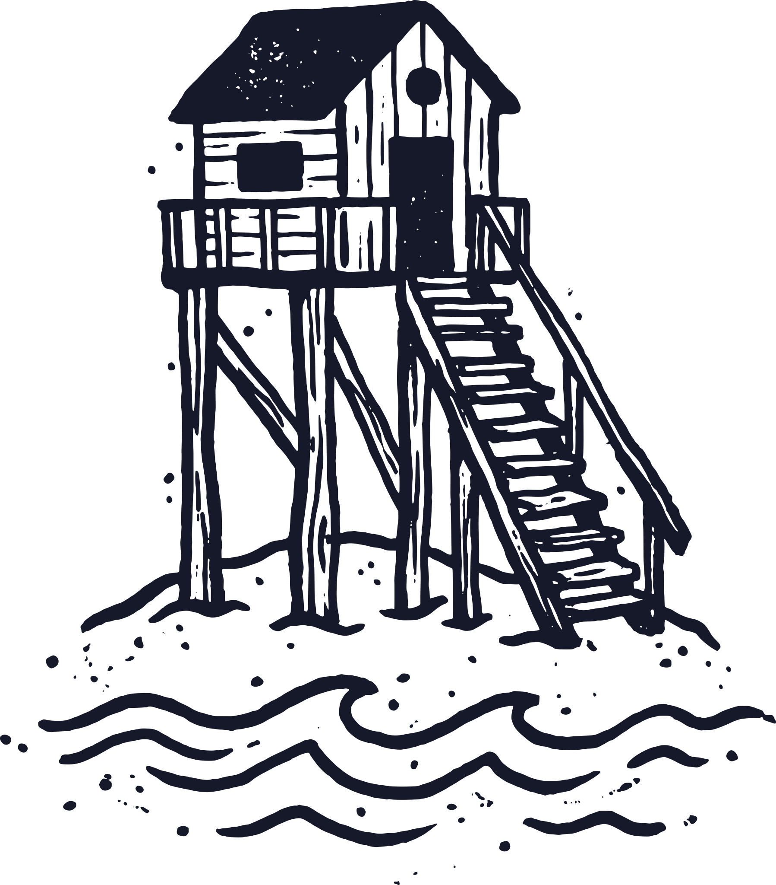
Studio
Eure Website, Seite für Seite zum Anfassen.
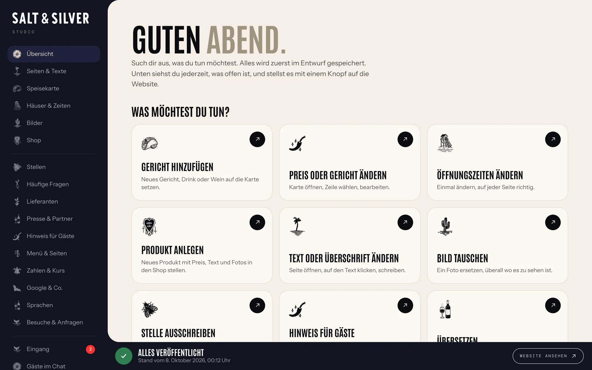
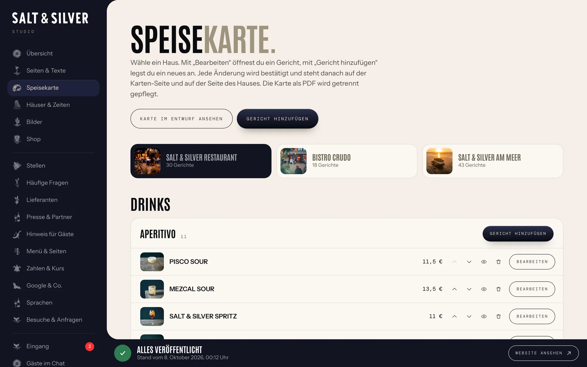
So geht’s
Text oder Foto ändernDie Seite öffnen, auf den Text oder das Foto klicken, neu schreiben oder ein anderes Foto wählen.
Öffnungszeiten ändernUnter «Häuser & Zeiten» stehen alle Zeiten. Einmal ändern, und sie stimmen auf jeder Seite.
VeröffentlichenAlles landet zuerst im Entwurf. Ihr seht vorher und nachher nebeneinander und stellt es mit einem Knopf auf die Website.
Jeder frühere Stand lässt sich zurückholen.

Karte
Gerichte, Preise und Weine eurer drei gedruckten Karten ändern, mit Probe-PDF.
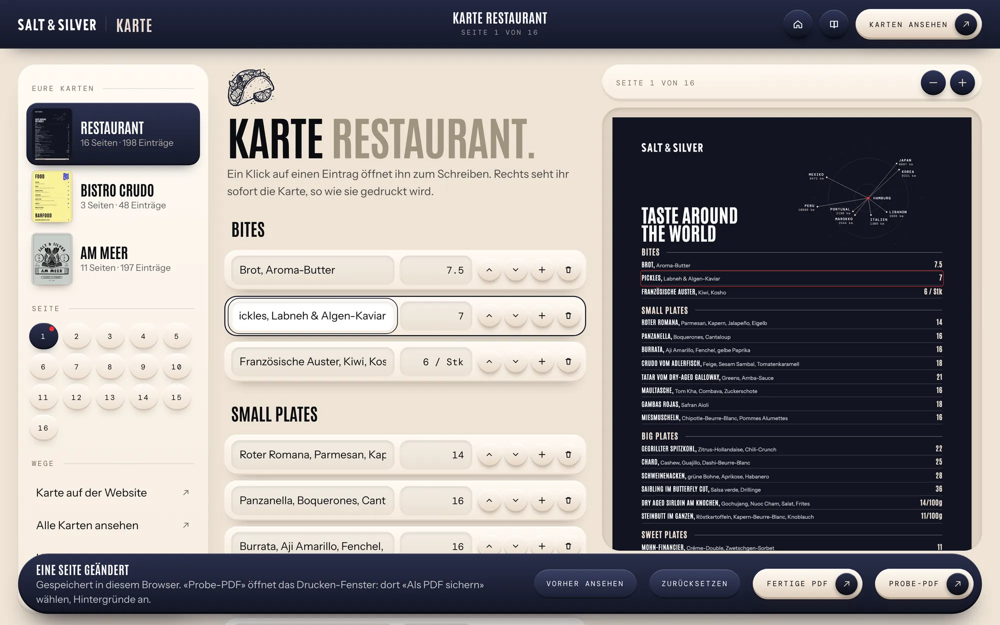
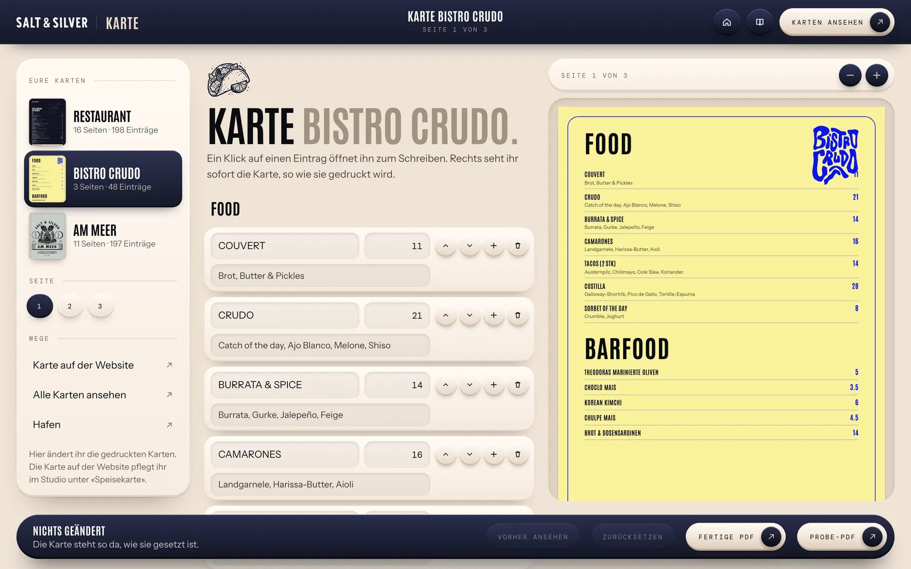
So geht’s
Gericht oder Preis ändernLinks die Karte wählen, den Eintrag anklicken, Name oder Preis überschreiben. Rechts steht sofort die Karte.
Neuer EintragMit dem Plus neben einem Gericht entsteht darunter ein neues. Mit den Pfeilen rückt es an die richtige Stelle.
Probe-PDFEin Knopf öffnet das Drucken-Fenster. Dort als PDF sichern, fertig für den Drucker am Tresen.
Ist eine Seite voll, sagt das Werkzeug es gleich.

Druckerei
Sticker, Gutscheine und Aushänge in eurem Stil, ohne Grafikprogramm.
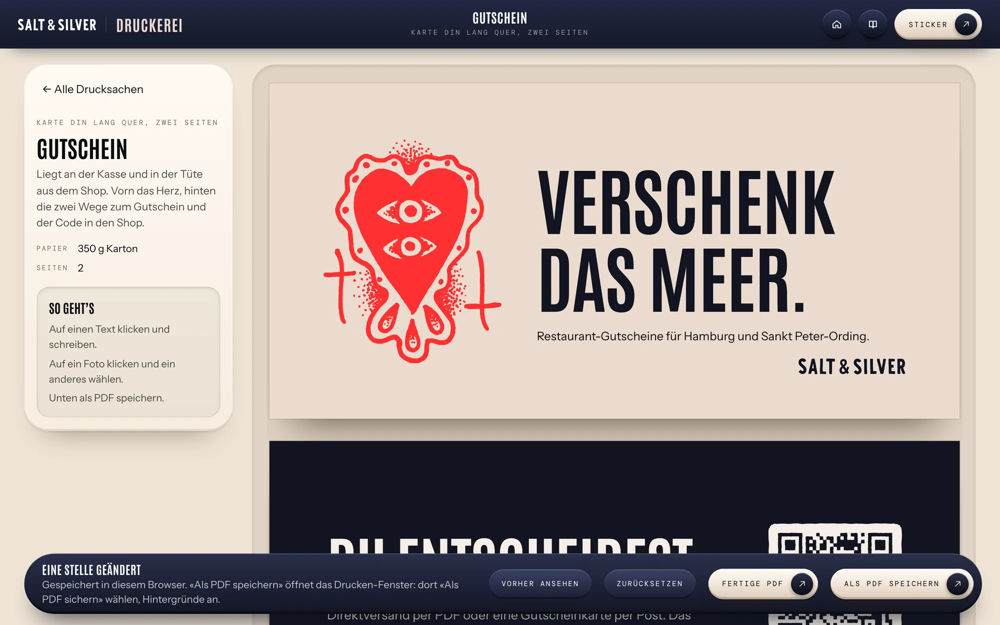
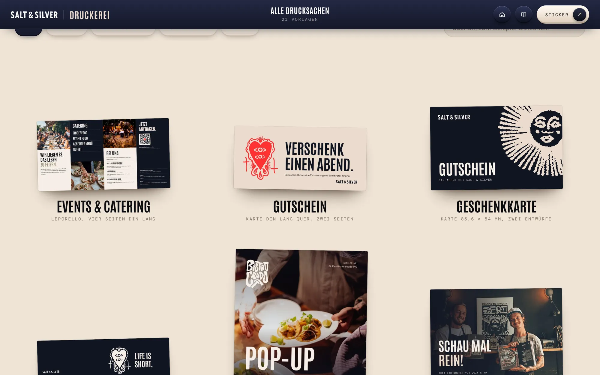
So geht’s
Blatt aussuchenGutschein, Postkarte, Aushang, Tischaufsteller: alle Vorlagen liegen in eurem Stil bereit.
Text und Foto anpassenAuf dem Blatt auf einen Text klicken und schreiben. Ein Klick auf ein Foto öffnet euer Bildarchiv.
Als PDF speichernMit Beschnitt für die Druckerei. Die fertige Fassung jeder Vorlage liegt daneben.
Eure Arbeiten bleiben im Browser des Rechners, an dem ihr sie anlegt.

Tresen
Der Chat auf jeder Seite, und bei euch der Eingang.
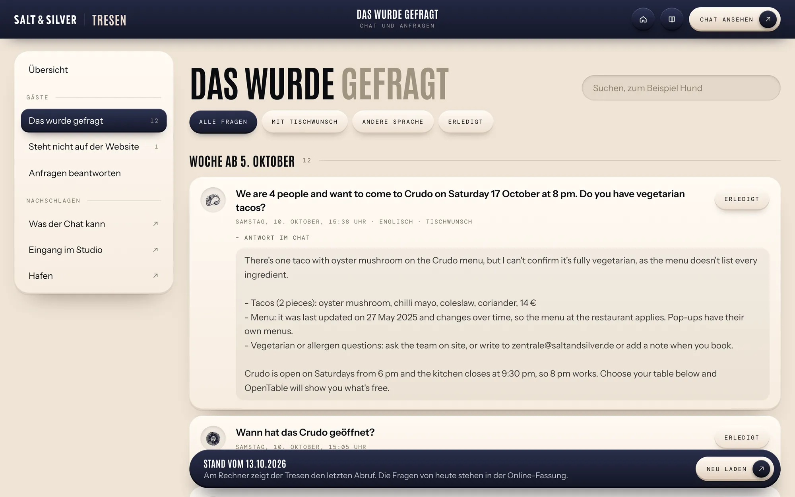
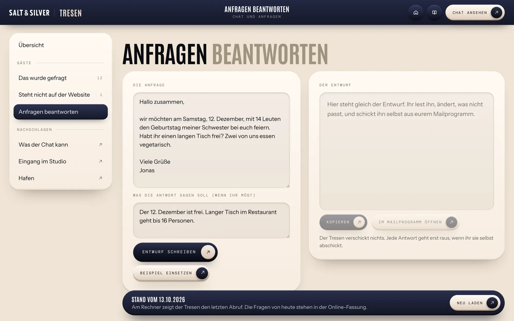
So geht’s
Lesen, was gefragt wurdeJede Frage aus dem Chat eurer Website steht hier, Woche für Woche, mit der Antwort dazu.
Lücken schließenFragen, auf die eure Website keine Antwort hat, sind markiert. Daraus wird im Studio eine häufige Frage.
Anfragen beantwortenEine Anfrage einfügen, den Entwurf in eurem Ton lesen und ändern. Verschickt wird nur, was ihr selbst schickt.
Fragen und Entwürfe laufen über die Online-Fassung eurer Website.
Marke
Eure Marke zum Arbeiten, für euch und für jede Agentur.
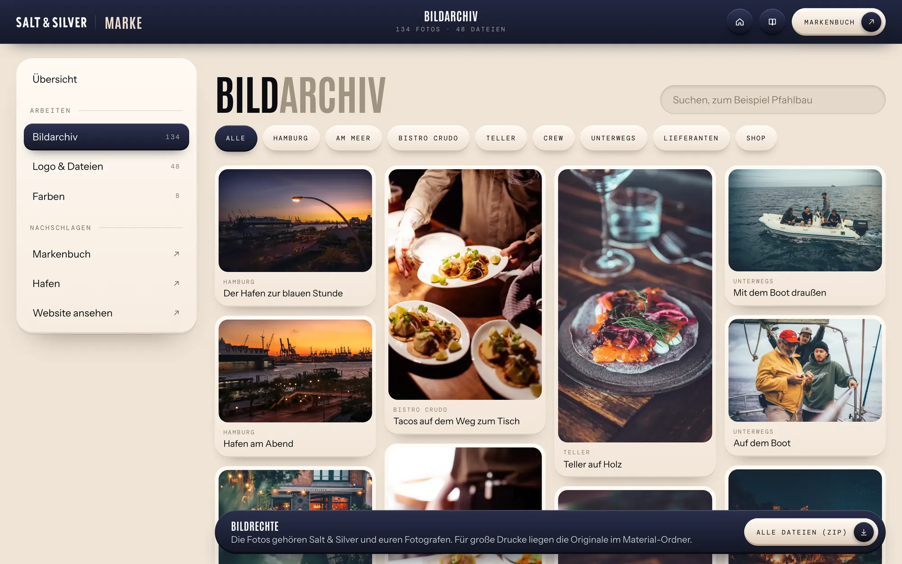
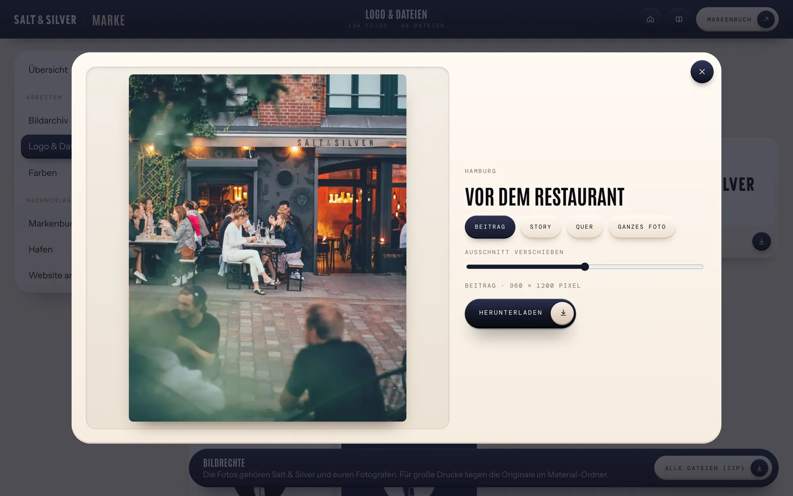
So geht’s
Ein Foto holenIm Bildarchiv ein Foto anklicken, Format wählen (Beitrag, Story, Quer oder ganz) und speichern.
Logo weitergebenWortmarke, Emblem, Zeichnungen und Farben liegen als Dateien bereit, einzeln oder als Paket.
Im Markenbuch nachschlagenAcht Kapitel von der Wortmarke bis zu den Bausteinen der Website.
Für große Drucke liegen die Originale im Material-Ordner.
Besucher
Wer eure Website besucht, welche Seiten gelesen werden und wie viele Tische daraus werden.
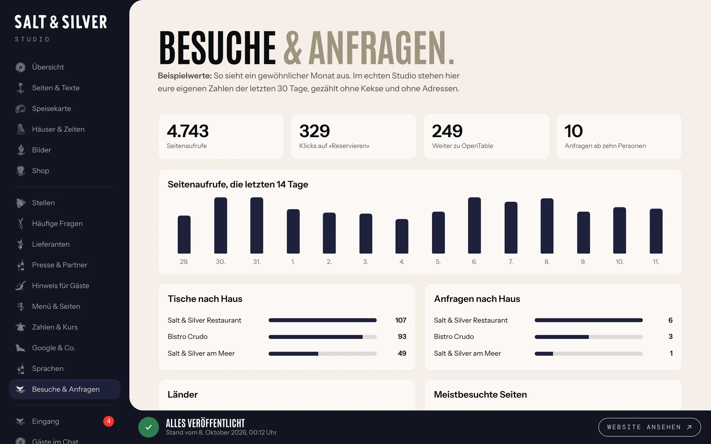
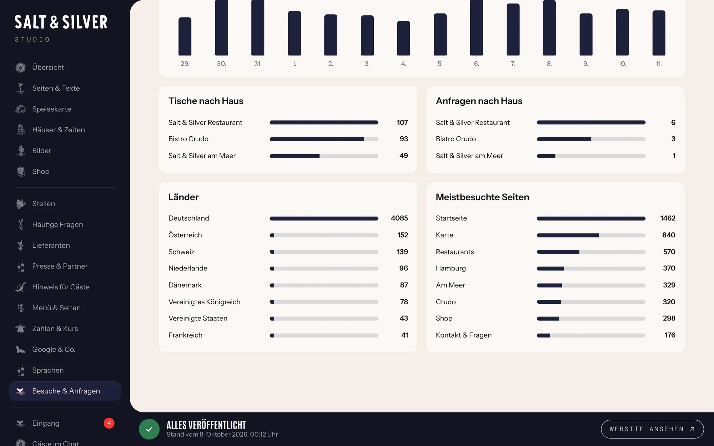
So geht’s
Den Monat auf einen BlickSeitenaufrufe der letzten 30 Tage, Klicks auf «Reservieren» und die Anfragen ab zehn Personen.
Tische nach HausFür Restaurant, Crudo und am Meer getrennt: wie viele Gäste weiter zu OpenTable gingen.
Länder und SeitenWoher die Gäste kommen und welche Seiten sie am meisten lesen, die Karte meist ganz vorn.
Gezählt ohne Kekse und ohne Adressen, kein Banner nötig.